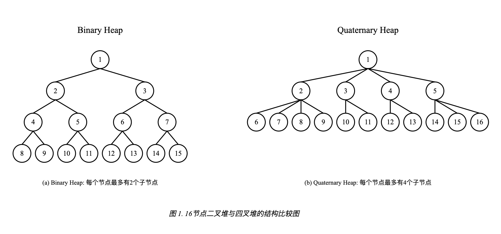
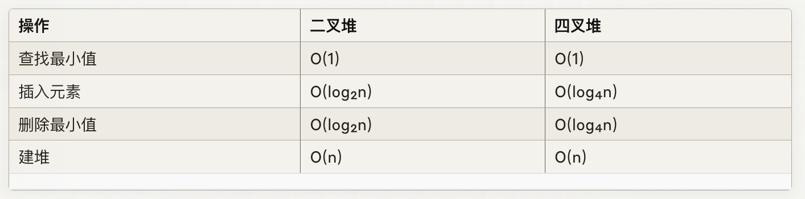

Go语言中Timer以及相关的Ticker、time.After、time.AfterFunc 等定时器最终是以四叉堆的数据形式存放的。
全局的 timer 堆也经历过三个阶段的重要升级。
- Go 1.9 版本之前，所有的计时器由全局唯一的四叉堆维护，goroutine间竞争激烈。
- Go 1.10 - 1.13，全局使用 64 个四叉堆维护全部的计时器，通过分片减少了竞争的压力，但是本质上还是没有解决 1.9 版本之前的问题
- Go 1.14 版本之后，每个 P 单独维护一个四叉堆，避免了goroutine的竞争。 (后面我们再介绍 per-P 的数据结构)
常见的堆(heap)常常以二叉堆的形式实现。可是为什么Go timer使用四叉堆呢？
以最小堆为例，下图展示了二叉堆和四叉堆的区别：

- 二叉堆：每个节点最多有2个子节点；四叉堆：每个节点最多有4个子节点
- 在相同节点数下，四叉堆的高度更低，约为二叉堆的一半（log₄n vs log₂n）
- 对于最小堆来说， 父节点的值小于等于子节点的值。
父节点和子节点的索引计算也略有不同。二叉堆的父子索引如下：
1 2 3
| parent = (i - 1) // 2 left_child = 2 * i + 1 right_child = 2 * i + 2
|
四叉堆的父子索引如下：
1 2 3
| parent = (i - 1) // 4 first_child = 4 * i + 1 last_child = 4 * i + 4
|
他们的操作时间复杂度:

因为四叉树的高度相对更低，所以四叉堆适合数据量特别大，需要减少树的高度的场景， Go的timer很久以前(11年前)就使用四叉树来实现Timer的保存，当然Go开发者也是根据测试结果选择了四叉树，最早的这个提交可以查看: ## code review 13094043: time: make timers heap 4-ary (Closed)
在Go的运行时中，四叉堆的实现在 src/runtime/time.go 文件中，可以查看源码实现。timers数据结构代表Timer的集合，每个P都有一个timers实例，用于维护当前P的所有Timer。
1 2 3 4 5 6 7 8 9 10 11 12 13 14 15 16 17 18 19 20 21 22 23 24 25 26 27 28 29 30 31 32 33 34 35 36 37 38 39 40
| type timers struct { mu mutex heap []timerWhen len atomic.Uint32 zombies atomic.Int32 raceCtx uintptr minWhenHeap atomic.Int64 minWhenModified atomic.Int64 } type timerWhen struct { timer *timer when int64 } func (ts *timers) lock() { lock(&ts.mu) } func (ts *timers) unlock() { ts.len.Store(uint32(len(ts.heap))) unlock(&ts.mu) }
|
同时Timer结构体还引用了Timers, 这叫你中有我，我中有你，这样的设计是为了方便Timer的管理，Timer的创建、删除、执行都是通过Timers来实现的。
1 2 3 4 5 6 7 8 9 10 11 12 13 14 15 16 17 18 19
| type timer struct { mu mutex astate atomic.Uint8 state uint8 isChan bool blocked uint32 when int64 period int64 f func(arg any, seq uintptr, delay int64) arg any seq uintptr ts *timers sendLock mutex isSending atomic.Int32 }
|
我们来看看对这个堆操作的一些方法。
timerHeapN定义了堆是四叉堆，也就是每个节点最多有4个子节点。
堆常用的辅助方法就是siftUp和siftDown，分别用于上浮和下沉操作。
下面是上浮的方法，我把一些跟踪检查的代码去掉了。整体看代码还是比较简单的，就是不停的上浮，直到找到合适的位置。
1 2 3 4 5 6 7 8 9 10 11 12 13 14 15 16 17 18 19 20 21 22 23 24 25 26 27
| func (ts *timers) siftUp(i int) { heap := ts.heap if i >= len(heap) { badTimer() } tw := heap[i] when := tw.when if when <= 0 { badTimer() } for i > 0 { p := int(uint(i-1) / timerHeapN) if when >= heap[p].when { break } heap[i] = heap[p] i = p } if heap[i].timer != tw.timer { heap[i] = tw } }
|
类似的，下面是下沉的方法：
1 2 3 4 5 6 7 8 9 10 11 12 13 14 15 16 17 18 19 20 21 22 23 24 25 26 27 28 29 30 31 32 33 34 35 36 37 38 39 40 41 42 43 44 45 46 47 48
| func (ts *timers) siftDown(i int) { heap := ts.heap n := len(heap) if i >= n { badTimer() } if i*timerHeapN+1 >= n { return } tw := heap[i] when := tw.when if when <= 0 { badTimer() } for { leftChild := i*timerHeapN + 1 if leftChild >= n { break } w := when c := -1 for j, tw := range heap[leftChild:min(leftChild+timerHeapN, n)] { if tw.when < w { w = tw.when c = leftChild + j } } if c < 0 { break } heap[i] = heap[c] i = c } if heap[i].timer != tw.timer { heap[i] = tw } }
|
比上浮略微复杂，因为需要在兄弟节点中找到最小的节点，然后将当前节点下沉到这个位置。
对于一个任意的slice,我们可以把它初始化为一个四叉堆，方法如下：
1 2 3 4 5 6 7 8 9 10
| func (ts *timers) initHeap() { if len(ts.heap) <= 1 { return } for i := int(uint(len(ts.heap)-1-1) / timerHeapN); i >= 0; i-- { ts.siftDown(i) } }
|
当然timers还有一些辅助timer处理的一些方法，很多和四叉堆没有关系了，我就不一一介绍了，我主要介绍几个和四叉堆相关的方法。
这里吐槽一下，这个time.go文件中代码组织很乱，timer和timers的方法都穿插在一起。理论应该是timer方法和timers方法分开，这样更清晰。或者把timers抽取到一个单独的文件中。
1 2 3 4 5 6 7 8 9 10 11 12 13 14 15 16 17 18 19 20 21 22 23
| func (ts *timers) deleteMin() { t := ts.heap[0].timer if t.ts != ts { throw("wrong timers") } t.ts = nil last := len(ts.heap) - 1 if last > 0 { ts.heap[0] = ts.heap[last] } ts.heap[last] = timerWhen{} ts.heap = ts.heap[:last] if last > 0 { ts.siftDown(0) } ts.updateMinWhenHeap() if last == 0 { ts.minWhenModified.Store(0) } }
|
增加一个timer到堆中：
1 2 3 4 5 6 7 8 9 10 11 12 13 14 15 16 17 18
| func (ts *timers) addHeap(t *timer) { if netpollInited.Load() == 0 { netpollGenericInit() } if t.ts != nil { throw("ts set in timer") } t.ts = ts ts.heap = append(ts.heap, timerWhen{t, t.when}) ts.siftUp(len(ts.heap) - 1) if t == ts.heap[0].timer { ts.updateMinWhenHeap() } }
|
n叉堆
d-ary 堆或 d-heap 是一种优先队列数据结构，是二进制堆的泛化，其中节点有d个子节点而不是 2 个子节点。因此，二进制堆是2堆，而三元堆是3堆。根据 Tarjan 和 Jensen 等人的说法，d-ary堆是由 Donald B. Johnson 1975 年发明的。
此数据结构允许比二进制堆更快地执行降低优先级操作(因为深度更浅了)，但代价是删除最小操作速度较慢。这种权衡导致算法的运行时间更长，其中降低优先级操作比删除最小操作更常见。此外，d-ary堆比二进制堆具有更好的内存缓存行为，尽管理论上最坏情况下的运行时间更长，但它们在实践中运行得更快。与二进制堆一样，d-ary堆是一种就地数据结构，除了在堆中存储项目数组所需的存储空间外，它不使用任何额外的存储空间。
在Go生态圈已经有相应的库实现这个数据结构，比如ahrav/go-d-ary-heap,所以如果你有类似场景的需求，或者想对比测试，你可以使用这个库。
导入库:
1
| import "github.com/ahrav/go-d-ary-heap"
|
下面的例子是创建三叉最小堆和四叉最大堆的例子:
1 2 3 4 5 6 7 8 9 10 11 12 13 14
| package main import ( "fmt" "github.com/ahrav/go-d-ary-heap" ) func main() { minHeap := heap.NewHeap[int](3, func(a, b int) bool { return a < b }) maxHeap := heap.NewHeap[int](4, func(a, b int) bool { return a > b }) }
|
往堆中增加元素：
1 2 3 4 5 6 7
| minHeap.Push(10) minHeap.Push(5) minHeap.Push(15) maxHeap.Push(10) maxHeap.Push(5) maxHeap.Push(15)
|
从堆中移除最值:
1 2
| fmt.Println(minHeap.Pop()) fmt.Println(maxHeap.Pop())
|
返回但是不移除最值:
1 2
| fmt.Println(minHeap.Peek()) fmt.Println(maxHeap.Peek())
|